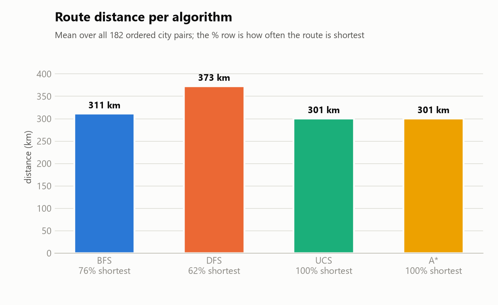
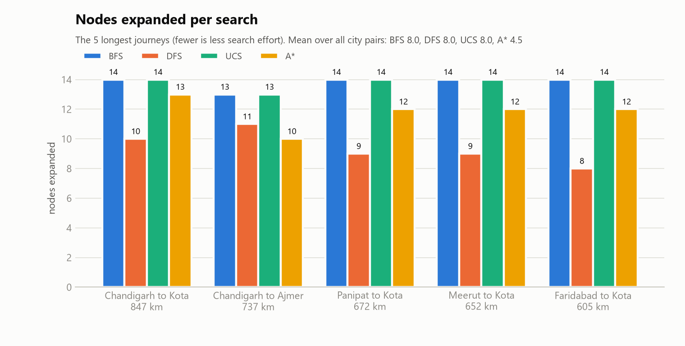
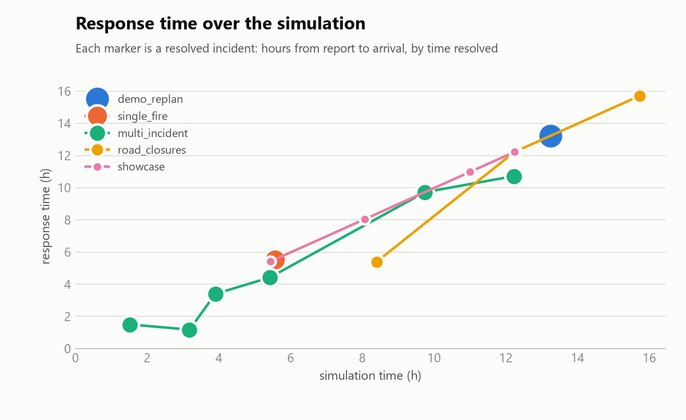
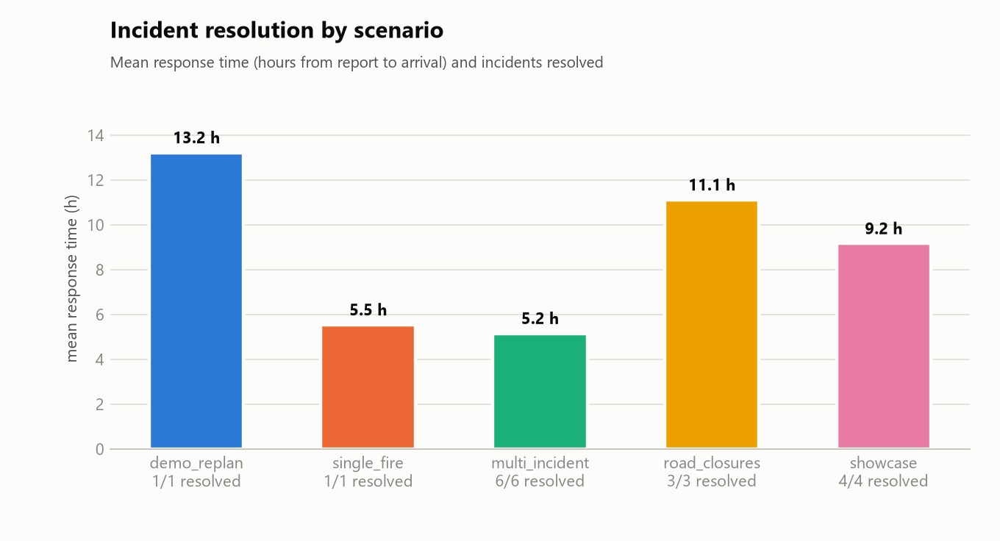

Aegis
An AI-based multi-agent emergency response simulation over 14 north-Indian cities. Fire trucks, ambulances and police race search algorithms to reach incidents, then recover when roads close or vehicles break down.
What it does
- Every vehicle is stationed at one base (Delhi): 2 fire trucks, 2 ambulances, 1 police.
- For each trip the vehicle runs BFS, DFS, UCS and A* and drives the best route. The other three routes run as faded ghost vehicles, so the comparison is visible.
- When several incidents are open, they are ranked by urgency (severity × people affected ÷ hours waiting). A constraint solver assigns compatible vehicles.
- Road closures and vehicle breakdowns trigger replanning. An incident that can no longer be served goes back to the allocator.
- A rule engine (facility tags such as hospitals and fuel depots) and an escalation rule (+1 severity per 2 h unresolved) shape priorities over time.
Results
Numbers from python main.py --analyze, which runs every scenario and benchmarks all
182 city pairs.
100%
UCS and A* find the shortest route (182 pairs)
76%
BFS finds the shortest route
62%
DFS finds the shortest route
4/4
showcase incidents resolved (about 12 h)




What it does not do
| Topic | What is built | Limitation |
|---|---|---|
| Planning | Escalation: +1 severity per 2 h unresolved, then re-allocate | Not a Markov decision process |
| Allocation | Backtracking, forward checking, branch-and-bound | Never pulls a vehicle off a job it is on |
| Map | 14 cities, 21 roads, constant 60 km/h | No traffic model; layout is schematic |
| Language input | Keyword and regex parser; optional LLM fallback | Not the main input; the LLM is off by default |
This web page is a project overview. The interactive Pygame control centre runs on your own machine.
Run it locally
pip install -r requirements.txt python main.py # control centre (map + control panel) python main.py --compare Delhi Kota # algorithm comparison for one route python main.py --analyze # scenarios + benchmark -> results/ python -m unittest discover -s tests # tests